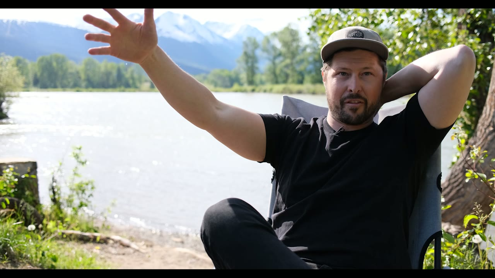
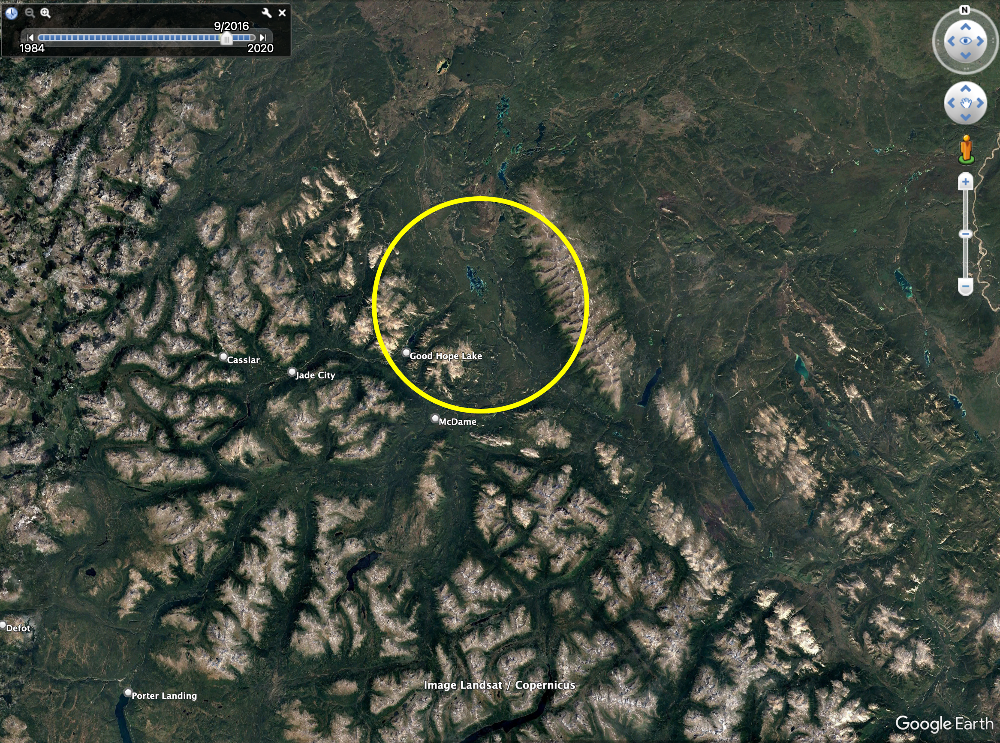
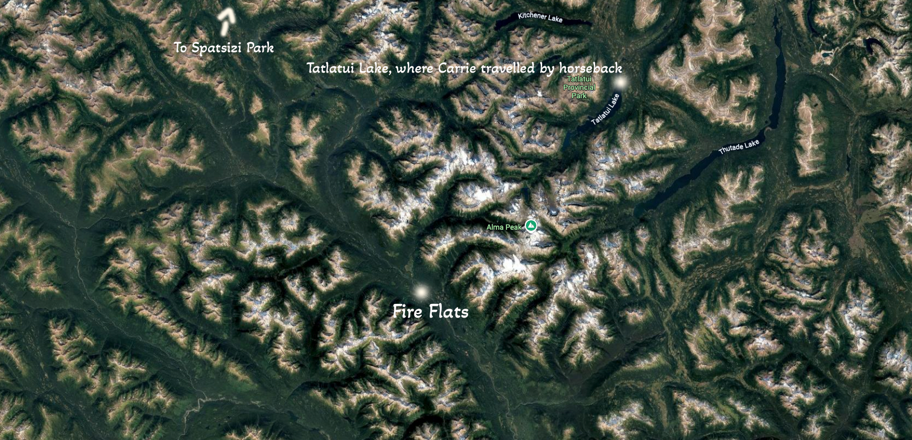
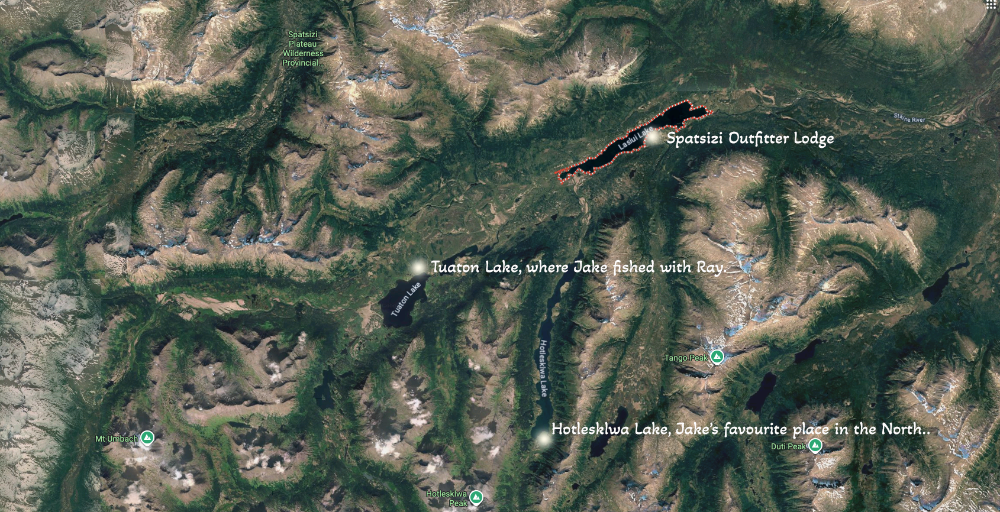
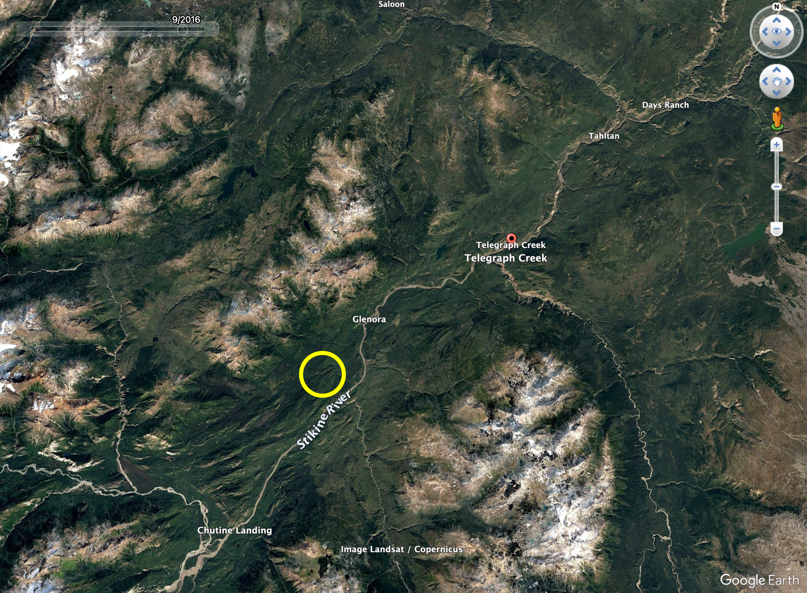

Humans of the North
Not spokespeople. Neighbours — five decades on a homestead, twenty years wrangling horses in the Spatsizi, a lifetime in Kaska country. Their stories, in their words.
The portraits
People with skin in this country
Filmed where they live and work. Captions available on every film. Five more portraits are in the edit suite now — from the Taku, the upper Nass, and beyond — and new films are posted here within a day of final cut.
Bill Lux
A member of the Kaska Dena Nation, Bill grew up in the asbestos-mining town of Cassiar and today works to advance his Nation's stewardship of its ancestral territory — finding the balance between resource development and conservation. He's proud of what's already protected: Tā Ch'ilā (Boya Lake) and Ne'āh' (Horse Ranch Range). His passions are hunting and being on the land — skills he now passes to his nieces and nephews.
"Dene K'éh Kusān: 'will always be there.' That's what it means."

Carrie Collingwood
Carrie comes from a family of guide outfitters in the lodge business since 1969. She spent her youth — and then twenty working years — walking, fishing and horse-wrangling the Spatsizi with Collingwood Bros., guiding guests from around the world. Today she and her family run Babine Norlakes, a steelhead lodge on the upper Babine.
"Spatsizi is three times the size of Yellowstone… that whole Stikine protected area is over a million hectares."

Jake Daly
Born and raised in Smithers, Jake never expected to become a fly-fishing guide until a job with the famed outfitter Ray Collingwood took him to Laslui and Hotleskwa Lake. Seven years guiding the upper Stikine taught him what country without cutblocks actually looks like. Two chapters of his story are here — the second, on first landing at Laslui in the upper Skeena, still gives him goosebumps.

Rick & Barb McCutcheon
Rick and Barb moved from Alberta to the remote Stikine valley west of Telegraph Creek in 1973, cleared land on Brewery Creek, and built an octagonal log cabin with hand tools. The local Tahltan people taught them hunting and the ways of the land; they raised and schooled two daughters there. Fifty-three years later they're still on the homestead — garden in every year, running a bed and breakfast.
"We never had a vehicle. We walked everywhere — five and a half hours to town."

Bruce Hobson
Woodworker and retired mineral surveyor — a man who spent a career reading the rocks, on what the country taught him. Bio & captions coming with the next batch
The Taku & the upper Nass
Five more portraits are coming in the next few weeks — including voices from the Taku, the Liard, and the upper Nass, and Indigenous voices from those territories. They'll appear here first.
Whose story should we tell next?
A guide, an elder, a lodge family, a line cutter with forty seasons in — if their story lives in this country, we want to film it.
More northern lives
From The Skeena's pages
Humans of Skeena — the profile series at The Skeena, our sister publication for the northwest — tells more of the region's stories. A taste:
Kitwanga artist Ezra Beaton's next verse — music, morality, and the move ahead →
Read Humans of SkeenaComing: watch on YouTube
These films will also live on a Northern Headwaters YouTube channel — easier to share, easier to embed. For now, they stream right here.